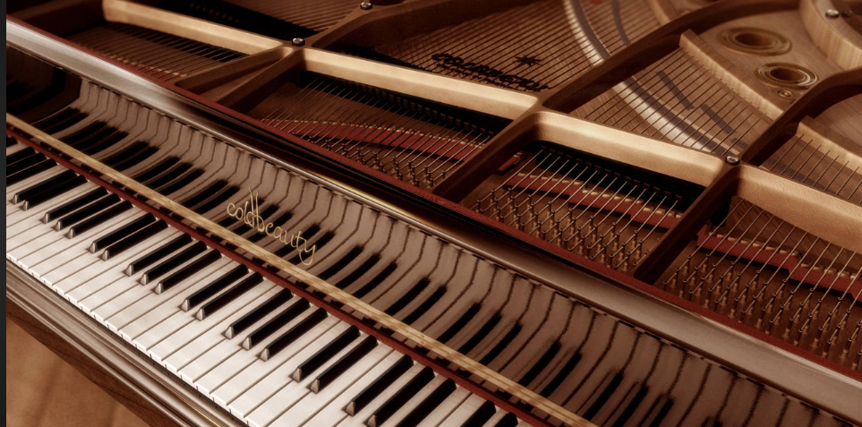

Teclas
História dos instrumentos de Teclas
Os instrumentos de teclado são aqueles em que os sons são acionados e controlados por um conjunto de teclas. Com uma forte base teórica musical, os instrumentos de tecla destacam-se por sua qualidade e versatilidade sonora.
Para entender como funcionam, imagine a tecla como uma gangorra. Quando sua extremidade externa é tocada e se abaixa, a outra imediatamente se levanta e aciona o mecanismo que produz o som. Existem diferentes tipos de mecanismos que originam os sons pelas teclas, e por isso há também diferentes tipos de instrumentos como o piano, o cravo e o órgão, entre outros.
Quais são os instrumentos de teclas?

Você sabia?
Os primeiros teclados surgiram no século III a. C., com os órgãos hidráulicos, na era greco-romana, mas só ganharam importância na civilização ocidental.
Os instrumentos antigos tinham apenas as teclas que hoje se conhece como “brancas” e não eram tocadas com os dedos, mas golpeadas com os pulsos ou punhos. As teclas “pretas” surgiram gradativamente a partir do século XII, e somente no início do século XV o teclado se estabeleceu da maneira como conhecemos atualmente.